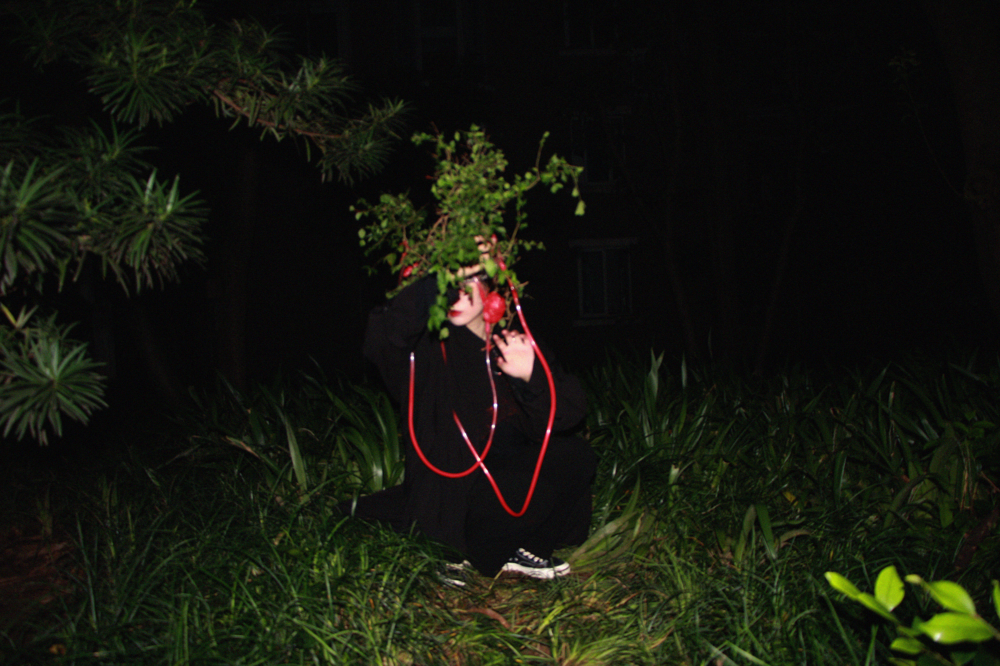

“扒皮”艺术中的虚无空间 | 李欣芮 Xinrui Li 「艺术访谈」
欢迎来到木牙Make Unique Young Arts，今天让我们以空间作为媒介来探索事物的边缘性与可能性～
虚无，道家用以指“道”的本体。谓道体虚无，故能包容生万物；性合于道，故有而若无，实而若虚。古往今来，对虚无的诸多解释和讨论充斥着文学，哲学以及科学的领域。我们对虚无的真实认知和虚无本身一样，存在着茫然，纱网状，粒子状，若隐若现以及塑料透明般的不可见。
处于抽象空间的我们，无时无刻不在探索一种虚无和无边界感，也许是一种生活状态，或许是一种人生体验，又或是一种情绪感悟。
今天我们邀请了李欣芮 Ariel Li来到木牙MUYA带我们进入一个材料的虚无空间，她通过装置和实验艺术的表现形式进行探索多重材料性的“去表皮化”，粒子状，金属网格状的无边界感的虚无与混沌。
Nothingness is used by Taoists to refer to the noumenon of "Tao". That the Tao body nothingness, so it can contain all things; Nature is in harmony with Tao, so there is and if not, real and if not. Through the ages, explanations and discussions of nothingness have permeated literature, philosophy, and science. Our real perception of nothingness, like that of nothingness itself, has the vagueness, the gauze, the particle, the looming, the plastic transparency of invisibility.
Living in an abstract space, we are always exploring a sense of nothingness and boundlessness, which may be a state of life, or a life experience, or a kind of emotional perception.
We invited Xinrui Li to MUYA to take us into a material nothingness space. She explores the "de-epidermization" of multiple materials through the expression form of installation and experimental art, the nothingness and chaos with no boundary in the form of particle and metal grid.

李欣芮，毕业于伦敦艺术大学切尔西学院，目前为英国皇家艺术学院室内设计研究生在读，独立室内设计师，装置艺术家，跨媒体叙事爱好者，致力于以空间作为媒介探索事物的边缘性与可能性，关注后数字因素，社会因素，女性/阶级因素等。
Xinrui Li, graduated from the university of the arts London Chelsea college, at present for the royal college of art, interior design graduate students reading independent interior designers, artists, and cross-media narrative, devotes to the borderline and possibility of space as a medium to explore things and focus on digital after factors, social factors, women/class factors, etc.


生活是一件很有趣的事情，它会在很多时刻给你惊喜和灵感，认真生活，认真感受生命力。
Life is a very interesting thing, it will give you many moments of surprise and inspiration, seriously live, seriously feel the vitality.

➤ 木牙MUYA:欣芮的空间设计中，使用粒子化，纱网化的视觉材料等创作。在欣芮看来，你是如何用材料来传达讲诉虚无，混沌，模糊的空间边界感的呢？
In the space design of Xinrui, visual materials such as particle and gauze are used. In Xinrui's opinion, how do you use materials to convey the sense of nothingness, chaos and fuzzy spatial boundaries?
Xinrui: 材料在很大程度上述说着空间的感知力和共情力，是空间叙事重要的承载对象，关于这种混沌虚无的边界感，我其实更多关注在我个人与材料的某种感知层面的联结，材料是有自己的情感属性的，这份情感属性对于每个人可能会不同，例如可能会觉得棉花传达着恐惧，混凝土感知着温暖，它是一种较为个人化私人化的东西，我很珍视这样的时刻，一种物质与非物质处于同一次元相互交流感知的时刻，它是一种知觉力。
Materials in large part the space perception and empathy, is an important bearing object, space narrative about this sense of the boundary of the chaos, I actually pay more attention to my personal and material in some kind of connection on the level of perception, the material is own emotional attributes, the emotional attributes may be different for everyone, for example, may think cotton conveys a feeling of fear, Concrete feels warmth, it is a kind of personal and personal thing, I cherish such a moment, a moment when the material and the non-material are in the same dimension of mutual communication and perception, it is a kind of perception.

➤ 木牙MUYA: 欣芮如何看待，室内设计，建筑设计和装置艺术之间的学科交叉性？
How does Xinrui see the interdisciplinary intersection between interior design, architecture design and installation art?
Xinrui: 我们之所以分类学科，是因为术业有专精，人的能力和精力也有限度，因此才会分为不同的“专业”，但我认为或许只有“理性”与“感性”两种类型，其实空间与艺术没有那么明显的边界，这在于你如何看待自己所处的角色，我认为我们应该带着这种“交叉性”去处理问题，因为没有事物是完全独立存在的，而正是这样的交叉性与关联性迸发出了处于一些混合边界的“火花”。
The reason why we classify subjects is that there are professional skills, and people's ability and energy are limited, so they can be divided into different "majors". But I think there are only two types of "rational" and "perceptual". In fact, there is no obvious boundary between space and art, which depends on how you view your role. I think we should deal with this kind of "intersectionality" because nothing is completely independent, and it is this kind of intersectionality and interconnectedness that creates the "spark" at some mixed boundary.

➤ 木牙MUYA: 随着时代的不断进化和发展，欣芮觉得未来的空间设计会演变成什么样子的呢？
As The Times continue to evolve and develop, what does Xinrui think the future of space design will be like?
Xinrui: 如果以我个人的想法来看的话，我更希望空间能够在某种程度上成为人类情感层面可以依赖和依靠的载体，我认为它有这样的潜力，但目前却更多的只把它当作一种物理性的载体空间，因为自古以来空间对人类的意义就不一样，它是活动场所，也是“家”，除开生活，生存，基本活动，我更希望以后的空间可以承载更多精神层面，心灵层面的东西，成为人类情感交流的重要载体。
If to see with my own ideas, I more hope can to some extent become the carrier of human emotional level can rely on, I think it has such potential, but currently only regard it as more of a physical carrier of the space, because the meaning of human space since ancient times is different, it's activities, is also a "home", apart from life, Survival, basic activities, I hope that the space in the future can carry more spiritual and spiritual things, and become an important carrier of human emotional communication.
➤ 木牙MUYA: 在很多当下当代的造型设计中，非常注重线条感和流动性的美感。可以与我们分享下，在空间设计或是装置艺术中，哪些方面是在创作的过程中比较侧重关注的呢？
In many contemporary modeling designs, great attention is paid to the sense of line and the beauty of fluidity. Could you please share with us what aspects of space design or installation art are focused on in the process of creation?
Xinrui: 这个我认为跟每个人所关注的创作重点有关系，以我自己举例的话，我认为一个创作之中最重要的是精神内核，和创作者本身在这个作品中想要表达的东西，以及创作者本人与作品之间的联结，这件作品由该创作者所创造，我们每个人在一定程度上都是基于人生以往的经历，见解，经验所定义出了一个“场域”，这个“场域”里有创作者至今为止的人生积累和一些潜在方向，这与创作出的作品之间的联系很重要，我认为能从作品中感受到创作者的一部分生命，因此赋予作品精神内核也是探索自我的一部分。
I think this is related to the focus of creation that everyone pays attention to. Taking my own example, I think the most important thing in a creation is the spiritual core, what the creator wants to express in the work, and the connection between the creator and the work. The work is created by the creator. Each of us to a certain extent, is based on previous experiences in life, insights and experience as defined by a "field", the creators of "field" so far the life accumulation and some potential direction, to create the connection between the work is very important, I think can feel part of the creator of life from the work, Therefore, endowing the work with the spiritual core is also a part of self-exploration.
➤ 木牙MUYA: 2021年艺术的边界逐渐被打破的局势越发明显。欣芮认为是什么样的发展方向促使着这样的局势？与现有的国内情况结合看待这一类发展？
It is increasingly clear that the boundaries of art are being broken in 2021. What direction does Xinrui think driving this situation?
Xinrui: 我认为这是历史的必然，也是人性的必然，在温饱与基础经济问题得到基本解决后就会寻求精神层面的满足和快感，新世代90/00一代也是这一发展方向的主力军，从斜杠青年到各界的各种各样破界合作，我认为是进入了一种探索和融合的状态，这会激发出更多有意思的事情，或许也会诞生一些新兴的领域，还是挺期待的，世界本身就很有意思。
I think this is historically inevitable, is also the human must, on the basis of the food and clothing and basically solve the economic problems will seek spiritual satisfaction and pleasure, a new generation of 90/00 generation is also the main force of the development direction, from slash youth to various broken world cooperation from all walks of life, I think is entered a state of exploration and fusion, This will lead to more interesting things and maybe some new fields. I'm looking forward to it. The world itself is interesting.
➤ 木牙MUYA: 疫情的出现加速了人们开始进入人工智能全面发展的社会，自动化的生活方式会全方面的覆盖到我们的日常中。欣芮如何理解和认知人性与机械性发展的？
The emergence of the epidemic has accelerated people's entry into society with the comprehensive development of artificial intelligence, and the automated lifestyle will cover all aspects of our daily life. How does Xinrui understand and perceive human nature and mechanical development?
Xinrui: 现在很多学派，文学，艺术等创作都对这一话题进行过很多未来方向的探索和猜想假设，我认为未来可能会产生较大争议或者是冲突的点仍然在于情感层面，我很好奇人工智能将如何去理解人类情感，换句话说人类将如何理解和剖析我们的情感，我们对于大脑的探知仍然有太多未知的领域，人工智能，或许是我们对于精神/情感探索的reflection。
Now a lot of school, literature, art and other songs are written on this topic have had a lot of the future direction of exploration and guess, I think the future may produce bigger dispute or conflict point still lies in the emotional level, I wonder how will the artificial intelligence to understand human emotions, in other words, human beings will be how to understand and analyze our emotions, There are still so many unknown areas in our understanding of the brain. Artificial intelligence may be the reflection of our spiritual/emotional exploration.
➤ 木牙MUYA: 研究生后准备做什么类型的工作？除了室内设计师之外还有哪些具体的就业方向工作类型？有什么工作方向是让人意想不到学室内设计也可以考虑的呢？
What kind of work do you plan to do after graduate school? What specific employment direction besides interior stylist work type still have? Are there any unexpected career directions that you might consider studying interior design?
Xinrui: 可能会比较感兴趣研究性的工作，目前比较致力于探索空间的共情力，具体就业方向其实没有给自己设一个太限制的框架，只要是符合自己探索兴趣和方向的，有机会应该都可以从事；关于意向不到的方向目前暂时还没有任何领域让我有这样的感受，我认为专业不是一个框架，它不会说限制你去从事什么样的领域的工作，它是一个基础向和加分项，在此基础上，基于自己的兴趣，很多领域都是可以探索的。
I may be interested in research work, and I am currently committed to exploring the empathic power of space. In fact, I have not set a limited framework for my specific employment direction. As long as it is in line with my exploration interest and direction, I can do it whenever I have the opportunity. At present, there is no field that makes me feel like this. I think major is not a framework, it does not say that you are restricted to what field of work, it is a foundation and bonus, on which you can explore many fields based on your interests.
➤ 木牙MUYA: 最近在读些什么书？有没有特别值得推荐的？可以大概讲一下内容怎么发现这本书的和为什么读吗？是否和室内设计相关？
What are you reading these days? Do you have anything in particular to recommend? Can you tell me a little bit about how you found the book and why you read it? Is it related to interior design?
Xinrui: 阴翳礼赞，是一本描写日本阴翳文化的书，说是书更像是一首长诗，我觉得可以让人对这种文化有更深的理解和认知，它可能不是那么的大众，总的来说是一种关于沉淀和底蕴的礼赞，我觉得是很值得去了解的一种文化，它可以和室内设计有关，实际上也可以和任何事物有关。
In Prasie Of Shadows is a book about Japanese culture, a book is more like a long poem, I think can make people had a deeper understanding on the culture and cognition, it may not be so popular, in general is a celebration of precipitate and details, I think it is worth to get to know a kind of culture, it can be related to interior design, It can be about anything, actually.

✯ Which inspire your works most ✯
“Ground control to Major Tom”
木牙微信订阅号